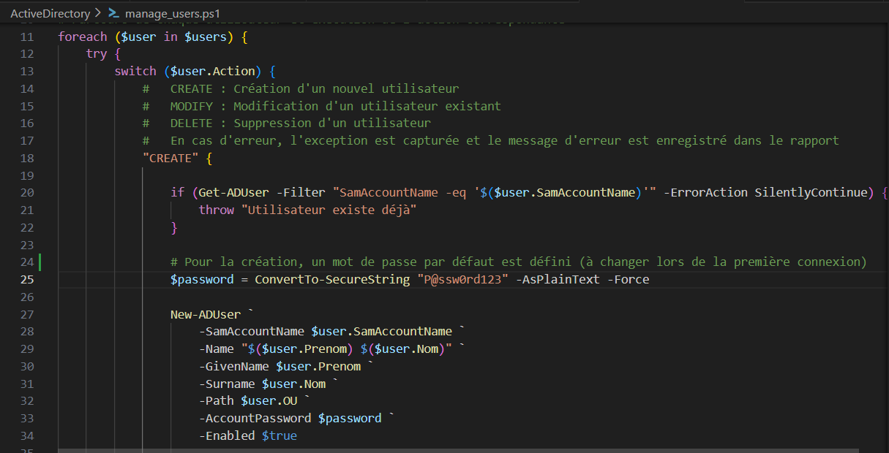

Mes Projets

Gestion utilisateurs AD
Automatisation de la création, modification et suppression des comptes utilisateurs dans Active Directory, avec génération de rapports CSV.
PowerShell, Active Directory
Détails

Monitoring serveurs
Outil de monitoring multiplateforme pour suivre CPU, RAM, disque, et logs, avec alertes par email.
Python, PowerShell
Détails

Scan et analyse réseau
Script Python pour scanner le réseau, identifier les périphériques et analyser le trafic pour sécuriser l’infrastructure.
Python
Détails

Administration à distance
Script Python pour exécuter des commandes sur plusieurs serveurs Linux à distance et automatiser les tâches d’administration.
Python, SSH
Détails

Backup automatisé
Script Python pour sauvegarder automatiquement des fichiers critiques sur un serveur distant ou NAS avec notifications.
Python, SFTP/FTP
Détails